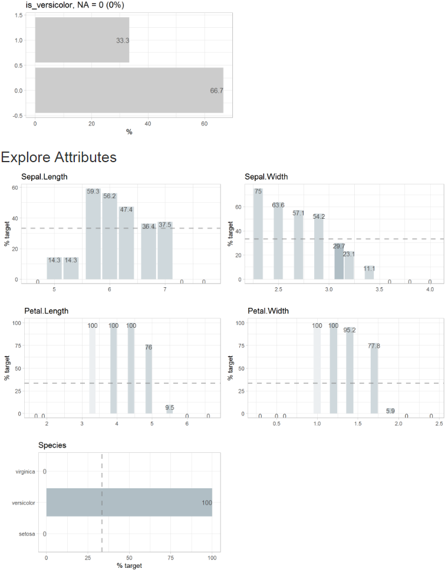

Simplifies Exploratory Data Analysis.
Why this package?
Faster insights with less code for experienced R users. Exploring a fresh new dataset is exciting. Instead of searching for syntax, use all your attention searching for interesting patterns in your data, using just a handful easy to remember functions. Your code is easy to understand - even for non R users.
Instant success for new R users. It is said that R has a steep learning curve, especially if you come from a GUI for your statistical analysis. Instead of learning a lot of R syntax before you can explore data, the explore package enables you to have instant success. You can start with just one function - explore() - and learn other R syntax later step by step.
How to use it
There are three ways to use the package:
Interactive data exploration (univariate, bivariate, multivariate). A target can be defined (binary / categorical / numerical).
Generate an automated report with one line of code. The target can be binary, categorical or numeric.
-
Manual exploration using a easy to remember set of tidy functions. There are basically five “verbs” to remember:
explore - if you want to explore a table, a variable or the relationship between a variable and a target (binary, categorical or numeric). The output of these functions is a plot (automatically checks if an attribute is categorical or numerical, chooses the best plot-type and handles outliers).
describe - if you want to describe a dataset or a variable (number of na, unique values, …) The output of these functions is a text.
explain - to create a simple model that explains a target.
explain_tree()for a decision tree,explain_forest()for a random forest,explain_xgboost()for a xgboost model andexplain_logreg()for a logistic regression.report - to generate an automated report of all variables. A target can be defined (binary, categorical or numeric)
abtest - to test if a difference is statistically significant
You can use {explore} with tidy data (each row is an observation) or with count data (each row is a group of observations with same attributes, one variable stores the number of observations). To use count data, you need to add the n parameter (variable containing the number of observations). Not all functions support count data.
Installation
CRAN
install.packages("explore")DEV version (github)
# install from github
if (!require(devtools)) install.packages("devtools")
devtools::install_github("rolkra/explore")if you are behind a firewall, you may want to:
- Download and unzip the explore package
- Then install it with devtools::install_local
Examples
Automated Report
Create a report by clicking the “report all” button or use the report() function. If no target is defined, the report shows all variables. If a target is defined, the report shows the relation between all variables and the target.
Report of all variables

To create a report that shows all variables in relation to a target, just add the target parameter
To create a report with a binary target you can use the parameter targetpct = TRUE (or split = FALSE)
# define a target (is Species versicolor?)
iris$is_versicolor <- ifelse(iris$Species == "versicolor", 1, 0)
iris$Species <- NULL
# create report
iris |> report(output_dir = tempdir(),
target = is_versicolor,
targetpct = TRUE)
Manual exploration
Example how to use the functions of the explore package to explore tidy data (each row is an observation) like the iris dataset:
# load packages
library(explore)
# use iris dataset
data(iris)
# explore Species
iris |> explore(Species)
# explore Sepal.Length
iris |> explore(Sepal.Length)
# define a target (is Species versicolor?)
iris$is_versicolor <- ifelse(iris$Species == "versicolor", 1, 0)
# explore relationship between Sepal.Length and the target
iris |> explore(Sepal.Length, target = is_versicolor)
# explore relationship between all variables and the target
iris |> explore_all(target = is_versicolor)
# explore correlation between Sepal.Length and Petal.Length
iris |> explore(Sepal.Length, Petal.Length)
# explore correlation between Sepal.Length, Petal.Length and a target
iris |> explore(Sepal.Length, Petal.Length, target = is_versicolor)
# describe dataset
describe(iris)
# describe Species
iris |> describe(Species)
# explain target using a decision tree
iris$Species <- NULL
iris |> explain_tree(target = is_versicolor)
# explain target using a logistic regression
iris |> explain_logreg(target = is_versicolor)Example how to use the functions of the explore package to explore count-data (each row is a group of observations):
# load packages
library(tibble)
library(explore)
# use titanic dataset
# n = number of observations
titanic <- as_tibble(Titanic)
# describe data
describe(titanic)
# describe Class
titanic |> describe(Class, n = n)
# explore Class
titanic |> explore(Class, n = n)
# explore relationship between Class and the target
titanic |> explore(Class, n = n, target = Survived)
# explore relationship between all variables and the target
titanic |> explore_all(n = n, target = Survived)
# explain target using a decision tree
titanic |> explain_tree(n = n, target = Survived)Some other useful functions:
# use data set and explore it
use_data_penguins() |> explore()
use_data_starwars() |> explore()
use_data_diamonds() |> explore()
use_data_iris() |> explore()
use_data_mpg() |> explore()
use_data_mtcars() |> explore()
use_data_titanic() |> explore()
use_data_beer() |> explore()
# create data set and explore it
create_data_app() |> explore()
create_data_buy() |> explore()
create_data_churn() |> explore()
create_data_esoteric() |> explore()
create_data_newsletter() |> explore()
create_data_person() |> explore()
create_data_unfair() |> explore()
# create random dataset with 100 observarions and 5 random variables
# and explore it
data <- create_data_random(obs = 100, vars = 5)
explore(data)
# create your own random dataset and explore it
data <- create_data_empty(obs = 1000) |>
add_var_random_01("target") |>
add_var_random_dbl("age", min_val = 18, max_val = 80) |>
add_var_random_cat("gender",
cat = c("male", "female", "other"),
prob = c(0.4, 0.4, 0.2)) |>
add_var_random_starsign() |>
add_var_random_moon()
explore(data)
# create an RMarkdown template to explore your own data
# set output_dir (existing file may be overwritten)
create_notebook_explore(
output_dir = tempdir(),
output_file = "notebook-explore.Rmd")